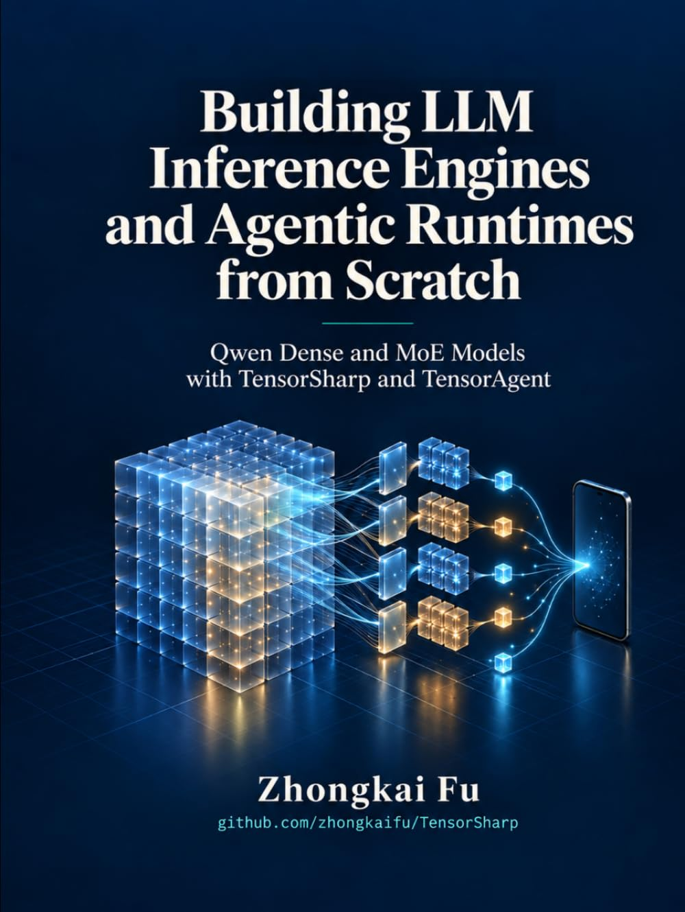

⚡ C# · .NET 10 · GGUF · AgentHost · GPU 加速
TensorSharp
一个面向 GGUF 模型的原生 .NET 推理引擎 —— 提供 CLI、浏览器聊天、兼容 Ollama 与 OpenAI 的 API，以及可选的 AgentHost，用于渐进式技能加载与模型生成代码沙箱。
一切都运行在你自己的硬件上：你的笔记本、工作站或服务器。推理与智能体工作默认留在本机，没有按 token 计费，同一套引擎既能完成快速的命令行测试，也能支撑团队内部共享的聊天机器人和生产环境的 REST 接口。运维方明确授予任一执行面的网络权限，或接受 Windows 的非受限代码执行模式后，数据才可能离开本机。本维基是完整指南 —— 从下方选择一个起点，或按 / 进行搜索。
新增句向量编码器： Snowflake Arctic Embed L v2.0 / all-MiniLM-L6-v2，支持纯 C# CPU 与原生 GGML CPU/Metal/CUDA，通过 --embeddings 提供兼容 OpenAI/Ollama 的 API。 嵌入模型、支持的后端与验证 →
配套图书
Zhongkai Fu 所著的两本书，将 TensorSharp 源码串联为循序渐进的实现路线。

Qwen · 推理与智能体
Building LLM Inference Engines and Agentic Runtimes from Scratch
Qwen Dense and MoE Models with TensorSharp and TensorAgent
以 TensorSharp 和 TensorAgent 为工程参考，使用 C# 探索从张量、分词到 Qwen 稠密与 MoE 推理的实现，再延伸至工具、技能、代码执行与沙箱边界，串联 GPU 优化、多模态输入及桌面和移动端部署。

Gemma 4 · 多模态推理
From Tensors to Tokens
Building a Multimodal LLM Inference Engine from Scratch with TensorSharp and Gemma 4 E4B
以 Gemma 4 E4B 为具体示例，使用 C# 与 .NET 构建多模态推理引擎，从张量存储、GGUF、量化和分词走向图像、视频与音频输入，并通过数值验证、缓存和批处理理解正确性与性能。
浏览维基
约 30 秒快速上手
按平台安装 .NET 10 SDK、git 与 curl 后，这条路径在原生 GGML 后端上运行经基准验证的 Gemma 4 E4B Q8_0 模型。复制命令约需 30 秒；7.48 GiB 的模型下载与首次 restore/构建耗时更久，取决于网络与机器。下面的代码块面向 Linux + NVIDIA —— 其他后端见下文。Windows PowerShell 请用 curl.exe。
-
克隆
下方第一次 dotnet run 会 restore 项目并编译原生 GGML CUDA 后端；首次构建可能需要数分钟。
git clone https://github.com/zhongkaifu/TensorSharp.git
cd TensorSharp
-
下载模型
推荐文件是 gemma-4-E4B-it-Q8_0.gguf（7.48 GiB）；同一仓库还提供更省内存的 gemma-4-E4B-it-Q4_K_M.gguf。
curl --create-dirs --fail -L "https://huggingface.co/ggml-org/gemma-4-E4B-it-GGUF/resolve/main/gemma-4-E4B-it-Q8_0.gguf?download=true" -o models/gemma-4-E4B-it-Q8_0.gguf
-
运行它
环境变量赋值用于启用 CUDA 原生构建。E4B 还支持思考（--think）与工具调用（--tools）。
echo "简短回答：TensorSharp 是什么？" > prompt.txt
TENSORSHARP_GGML_NATIVE_ENABLE_CUDA=ON dotnet run --project TensorSharp.Cli -c Release -p:TensorSharpSkipMlxNative=true -- --model models/gemma-4-E4B-it-Q8_0.gguf --input prompt.txt --max-tokens 128 --backend ggml_cuda
-
想要 UI + API？
用同一模型启动服务端。浏览器聊天位于 /；纯文本存活检查位于 /health。
TENSORSHARP_GGML_NATIVE_ENABLE_CUDA=ON dotnet run --project TensorSharp.Server.Host -c Release -p:TensorSharpSkipMlxNative=true -- --model models/gemma-4-E4B-it-Q8_0.gguf --backend ggml_cuda --max-tokens 128
# 打开 http://localhost:5000/
其他后端与多模态
Apple Silicon 请省略 CUDA 环境变量并使用 ggml_metal；受支持的 Windows/Linux Vulkan GPU 请改为请求 TENSORSHARP_GGML_NATIVE_ENABLE_VULKAN=ON 并使用 ggml_vulkan；没有 GPU 时使用 ggml_cpu（原生 CPU 内核，无需 GPU 工具链）。纯文本推理只需要模型 GGUF；图像、视频或音频输入还需下载匹配的 mmproj-gemma-4-E4B-it-Q8_0.gguf，并通过 --mmproj 传入。Windows PowerShell 与完整平台语法见 E4B 快路径说明。
为什么选择 TensorSharp？
这是为谁准备的？
TensorSharp 面向各类访客。下面是每类人最快的上手路径。
资深 / 首席工程师
阅读高级功能 —— 分页 KV、连续批处理、推测解码。